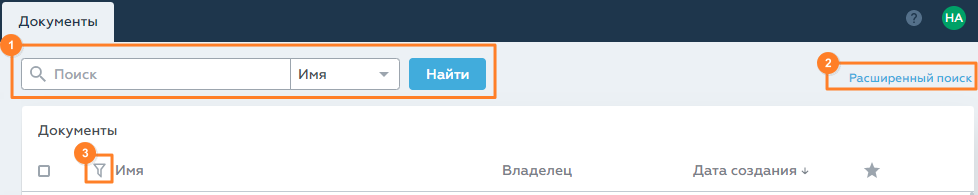

В Riverdoc документы и папки можно искать одним из способов:

[1] Общий поиск – поиск и документов, и папок по названию или описанию.
[2] Расширенный поиск – поиск документов или папок по значению одного или нескольких параметров (например, по виду документа и/или по дате создания).
[3] Фильтрация документов и папок в текущей директории.
 Важно. При поиске регистр букв не имеет значение, а написание букв кириллицей или латиницей имеет значение (пример: в запросе "Отдел ECM" написание букв "ЕСМ" в поисковом запросе и в названии или описании объекта должно совпадать).
Важно. При поиске регистр букв не имеет значение, а написание букв кириллицей или латиницей имеет значение (пример: в запросе "Отдел ECM" написание букв "ЕСМ" в поисковом запросе и в названии или описании объекта должно совпадать).
Общий поиск
Общий поиск позволяет найти и документы, и папки по названию или описанию объекта. Такой поиск является универсальным и может занимать продолжительное время.
Как искать документы и папки в общем поиске
1.В выпадающем списке выберите параметр, по которому хотите искать документы и папки:
oИмя (по умолчанию) – искать документы и папки по названию.
oОписание – искать документы и папки по описанию.
2.Определитесь с областью поиска. Возможны варианты:
•Искать в конкретной папке и её подпапках.
Папка поиска указывается автоматически, когда пользователь открыл какую-либо папку в подразделе Документы:
Общий поиск в папке и её подпапках
Папку поиска можно очистить с помощью  , тем самым расширить область поиска: весь электронный архив.
, тем самым расширить область поиска: весь электронный архив.
•Искать по всему электронному архиву.
Папка поиска не указывается автоматически, если открыт подраздел Недавние, Избранное или корневой уровень подраздела Документы, а также если пользователь очистил папку поиска.
Общий поиск в электронном архиве
3.В строке поиска введите поисковый запрос. Поиск выполняется по полному и частичному соответствию.
Чтобы очистить строку поиска, нажмите значок справа. Значок появляется, когда пользователь начинает вводить запрос.
 Примечание. При щелчке в поле поиска выводится список предыдущих запросов, этот список формируется средствами используемого браузера.
Примечание. При щелчке в поле поиска выводится список предыдущих запросов, этот список формируется средствами используемого браузера.
4.Нажмите кнопку Найти или клавишу Enter.
В результате успешного поиска система выдаст список найденных документов и папок, а также общее количество найденных объектов.
Результаты поиска выводятся в виде таблицы. Сначала следуют папки, затем документы, отсортированные по дате создания: от новых к старым. Пользователь может изменить порядок сортировки.
Если совпадений не было найдено, система выдаст соответствующее уведомление и предложит воспользоваться расширенным поиском.
Расширенный поиск
Чтобы открыть форму расширенного поиска, нажмите ссылку [2] Расширенный поиск.
Расширенный поиск позволяет искать документы или папки по одному или нескольким атрибутам одновременно, например:
•Вид документа;
•Искать в;
•Имя документа (равно/содержит);
•Описание (равно/содержит);
•Создан;
•Изменён.
Пользователь может воспользоваться расширенным поиском после общего, если общий поиск не дал результатов. В этом случае форма расширенного поиска предзаполнена: выбран атрибут и заполнено его значение, которое пользователь указал в общем поиске. Также расширенным поиском можно воспользоваться сразу. В этом случае потребуется немного больше времени на заполнение параметров поиска, но продолжительность поиска сократится по сравнению с общим поиском.
Фильтрация документов и папок
Фильтрация позволяет сократить количество отображаемых объектов в текущей папке.
В текущей версии Riverdoc возможна фильтрация по имени или описанию объекта в любой папке подраздела Документы.
Чтобы отфильтровать объекты в папке:
1.Нажмите значок в заголовке таблицы:
Фильтр документов и папок
Откроется фильтр.
2.В строке Фильтр введите значение, по которому хотите отфильтровать список документов и папок. Фильтрация выполняется по полному и частичному соответствию.
3.В группе Фильтровать по: выберите, по какому параметру фильтровать значения:
oИмени (по умолчанию) – по названию папок и документов;
oОписанию – по описанию папок и документов.
4.Нажмите кнопку Применить.
Если в результате фильтрации были найдены совпадения, система выведет список подходящих объектов, а также укажет их количество. Если в результате фильтрации совпадений не было найдено, система выведет соответствующее уведомление и укажет "Подходящих объектов: 0".
Чтобы отменить фильтрацию, нажмите ссылку Сбросить фильтр:
Сбросить фильтр
 Примечание. Если в папке применена фильтрация, значок меняется на
Примечание. Если в папке применена фильтрация, значок меняется на  . При переключении между подразделами и разделами фильтрация сбрасывается.
. При переключении между подразделами и разделами фильтрация сбрасывается.